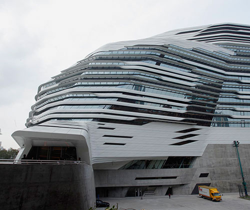

社區貢獻及慈善
人才培訓是馬會重點關注的範疇之一，旨在為持不同能力和志願的人士，創造盡展潛能的機會。創立於1960年的賽馬會實用中學，是馬會資助的第一所學校；當時大量內地移民湧入香港，令適齡學童人數急增，促使賽馬會實用中學應運而生。其後，馬會的捐款更惠及各級主流教育，以至職業培訓層面。由馬會資助其興建工程及其後多項發展的香港科技大學，現已躍升為全球最負盛名的高等學府之一。此外，透過香港理工大學賽馬會創新樓等項目，馬會亦為香港創意產業等領域的長遠發展，注入新動力。
馬會對本地教育「軟件」的貢獻同樣值得關注。在馬會慈善信託基金的鼎力支持下，來自低收入家庭的中小學生獲得深造及參與各種課外活動的平等機會，擴闊他們的視野。香港賽馬會獎學金作為本港其中一個備受尊崇的獎學金項目，近年將資助範圍由本科生拓展至涵蓋研究生、有特殊教育需要的學生，以及正接受職業訓練的同學，進一步落實為青年人提供多元發展出路的使命。
